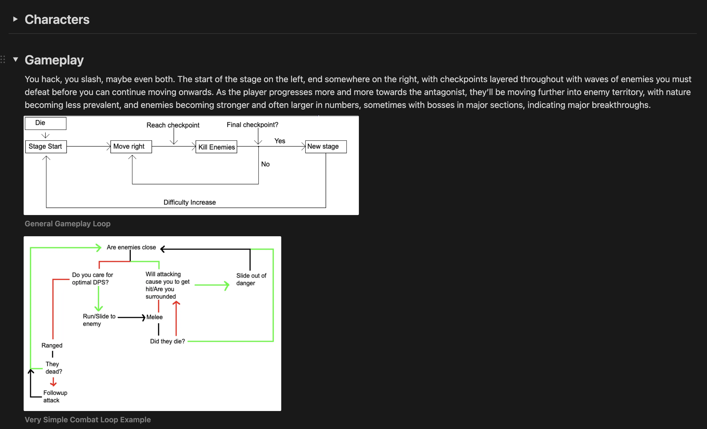
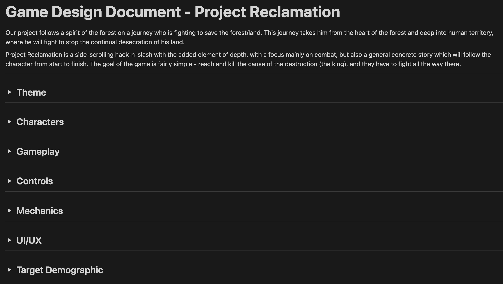

Programming | sebasti@umich.edu
Date: September 25, 2024
Not much this week, just got this site up and running, looking forward to working on this more!
On another note, I need to make sure videos work so have a random video of an Axl Low combo in GGS
Date: October 13, 2024
As with most projects, choosing a topic was a pretty difficult task. Throughout a couple meetings and a lot of documentation, we finally managed to settle down on one choice, a side-scroller in the same style as Castle Crashers, a Hack n' slash with depth.
In terms of time spent this week, a considerable amount was spent in meetings. Our team has literally 0 times where we can all meet in person, so a lot of my time was spent trying to figure out a solid schedule for us to follow, and even more trying to come to a consensus on what to create. We spent ~4 hours over two weeks in official studio meetings, and outside we spent around 2.
My time during the first week was mainly dedicated to research of games, at the time side-scroller types such as Dead Cells and Katana Zero, with some research on Hyperlight Drifter as well. This all was around 8 hours of playing these games and taking notes on what I thought were important elements that we should add to our games.
For the research itself, I took it upon myself to get ahead on organizing our team, which meant that we wanted really good documentation. My way of doing this was to format documents on Notion to give easy and intuitive access to anything people needed on any form, be it a team member or an advisor that wants to check in on our progress. This took around 3 hours to complete as a conservative estimate, as getting to learn Notion and getting all the documents we needed set up took considerable effort. On top of that I really just like things looking nice so a lot of time was spent making things look nice, something that I hope pays off when we need to look back at docs in the future.
The second week consisted more of preparing to start out work on the actual product itself. Since I haven't played a game like we intend to create before, I spent a bit of time figuring out the ins and outs of the genre. I found there was a demo of Castle Crashers on Steam, so, combined with watching gameplay videos on Youtube, I spent about an hour researching things like the general gameplay loop and combat within the game.
After that Zane (the other programming member on our team) and I decided to start creating a quick draft of how we want to implement the gameplay, but couldn't come to an agreement. I had believed that a strict 2D implementation would be more effective, while he believed that a 3D implentation using an isometric camera would be more effective, so we agreed to spend a few days each on our implementations to see what one we should move forward with.
Before starting the prototype, I wanted to make sure I understood state machines, as suggest by the studio president, so I spent a few hours watching tutorials to understand when and how to use them. Starting the project, I did my best to implement a state machine for the player (and a very very basic enemy, just chasing the player and patrolling), though since it was a prototype without access to anything like even animations yet, it was extremely limited, essentially only having idling, running, jumping, and attacking states. Eventually, after a considerable amount of time spent trying to figure out factors like jumping or platforming in 2D I realized that, yes, 3D is probably better. The 2D prototype is most likely going to get scrapped, which is a "waste" of a good 4 hours of my life, but I think at the very least I can reimplement the state machinery I used for player movement quite easily in 3D so we can start our project with good structure.
Time Overview:
Studio Meetings: 4 Hours
Team Meetings: 2 Hours
Genre Research: 8 Hours
Notion Documentation: 3 Hours
Game Research (Castle Crashers): 1 Hour
Unity State Machine Research & Creation: 7 Hours
Prototyping: 4 Hours
Overall Time: 28 Hours
using System.Collections;
using System.Collections.Generic;
using UnityEngine;
public abstract class State : MonoBehaviour
{
protected Core core;
public bool isComplete {get; protected set;} // wanna access, don't want to show in the editor because it's annoying
protected float startTime;
public float time => Time.time - startTime;
protected Rigidbody2D rb => core.rb;
protected Animator animator => core.animator;
public StateMachine machine;
protected State parent;
public State state => machine.state;
public virtual void Enter() {}
public virtual void Do() {}
public virtual void FixedDo() {}
public virtual void Exit() {}
public void DoBranch(){
Do();
state?.DoBranch(); // Call do on state below
}
public void FixedDoBranch(){
FixedDo();
state?.FixedDoBranch(); // Call do on state below
}
protected void Set(State newState, bool force = false){
machine.Set(newState, force); // here so we don't need to machine.Set every time
}
public void SetCore(Core _core){
machine = new StateMachine();
core = _core;
}
public void Initialise(){
isComplete = false;
startTime = Time.time;
}
}
using System.Collections;
using System.Collections.Generic;
using UnityEngine;
public class StateMachine
{
// Start is called before the first frame update
public State state;
public void Set(State newState, bool force = false){
if(state != newState || force){
state?.Exit(); // make sure it aint null
state = newState;
state.Initialise();
state.Enter();
}
}
}
using System.Collections;
using System.Collections.Generic;
using UnityEngine;
public class PlayerMovement : Core {
public RunState runState;
public IdleState idleState;
public JumpState jumpState;
public BoxCollider2D groundCheck;
public LayerMask groundMask;
//movement properties
public float acceleration;
[Range(0f, 1f)]
public float groundDecay;
public float maxSpeed;
//variables
public float xInput;
public float yInput;
void Start(){
SetupInstances();
machine.Set(idleState);
}
// Update is called once per frame
void Update() {
CheckInput();
HandleJump();
SelectState();
machine.state.Do();
}
void SelectState(){
if(groundSensor.grounded){
if (xInput == 0 && yInput == 0){
machine.Set(idleState);
}
else{
machine.Set(runState);
}
}
else{
machine.Set(jumpState);
}
}
void FixedUpdate() {
HandleMovement();
ApplyFriction();
}
void CheckInput() {
xInput = Input.GetAxis("Horizontal");
yInput = Input.GetAxis("Vertical");
}
void HandleMovement() {
if (Mathf.Abs(xInput) > 0){
float increment = xInput * acceleration;
float newSpeedX = Mathf.Clamp(rb.velocity.x + increment, -maxSpeed, maxSpeed);
rb.velocity = new Vector2(newSpeedX, rb.velocity.y);
FaceInput();
}
if (Mathf.Abs(yInput) > 0){
float increment = yInput * acceleration;
float newSpeedY = Mathf.Clamp(rb.velocity.y + increment, -maxSpeed, maxSpeed);
rb.velocity = new Vector2(rb.velocity.x, newSpeedY);
}
rb.velocity = rb.velocity.magnitude > maxSpeed ? rb.velocity.normalized * maxSpeed : rb.velocity;
}
void FaceInput() {
float direction = Mathf.Sign(xInput);
transform.localScale = new Vector3(direction, 1, 1);
}
void HandleJump() {
if (Input.GetButtonDown("Jump") && groundSensor.grounded) {
return; // Has to change for 3D
}
}
void ApplyFriction() {
if (groundSensor.grounded && xInput == 0) {
rb.velocity = new Vector2(rb.velocity.x*groundDecay, rb.velocity.y);
}
if (groundSensor.grounded && yInput == 0) {
rb.velocity = new Vector2(rb.velocity.x, rb.velocity.y * groundDecay);
}
}
// Need a function for getting damaged and attacking, new states bb
}
Date: October 26, 2024
These last two weeks were mainly trying to get the new 3D implentation of our project, something that wasn't nearly as easy as I'd hoped.
To start things off, we had to completely redo basically everything Unity related, porting from any 2D implementation we had into 3D, something that took a very good amount of time, especially since getting phsyics to work the way you want it to doesn't really happen to easily. Mainly what took the most time was trying to get things like the camera to play nice, trying to understand other programmers' code, and how to get the 3D environment to look 2D, something we got to work by using an orthographic camera positioned at an angle above the scene.
Now, starting actual game production, we figured we'd get right into the gameplay, trying to make some really simple attack and shooting, as well as enemy characteristics. The attacking and shooting took a good amount of time, with a lot of setbacks mainly due to the 3D nature of the inner workings of the game and hitboxes that, though missing in the 3d scene, felt like they should hit in the 2D perspective of it. To remedy this, we right now are taking the approach of just massively increasing the size of attacks and projectiles so that an angle of 10 degrees off target doesn't completely whiff, but we'll be thinking of other ways to fix this.
Those simple attacks in place, we now needed targets, so I went with the good old fashioned enemy that just walks at you. To make it a bit less stagnant I did code it so that it has a few states. It has anchor points within the map between which it can travel, searching for the player. If the player enters it vision range, it starts to chase until the play dies or it gets killed, which should be a decent enough enemy for a prototype.
Now, after these really simple gameplay things, we wanted to get a bit of the general style of the game in place, particularly the background and the character model. For the background, I ended up making a parallax model where different background panels moving at different speeds give a big sense of scale to the background behind the player, giving a lot more artistic freedom to our artist. For player art, it was somehow less straightforward, and I had to spend a very good amount of time battling with the Unity animation system. It still isn't perfect, and I ended up needing to hard code frames of the animation in their editor, but it works for now. I hope to start looking more into animation curves in the future to make the process of swapping between animations (what I had the most trouble with) less obvious and hopefully more impactful.
Other things we needed for the baseline of our game were pretty simple things like shadows to indicate what depth the character (and enemies) are, which was fairly simple, though it took a few iterations to find out which was the most effective, eventually settling on a script that we just place on a child object of any object we want to have a shadow. At one point I added the ability to aim the shooting, something that showed a cursor on screen, not actually where you were aiming, but at the ground below where you were aiming, to try and make it a bit more intuitive with the quite confusing depth we have. In the end we decided to scrap it, and I think that unless we have a lot more time our aiming system will essentially just be shooting along the X-axis from now on.
Doesn't need that much note, but we also got some UI going, namely some pretty important things like health and level progress.
The final thing we did this week was add a checkpoint system, which will be our core gameplay for each level. The stages will be divided into sections where enemies will be roaming, with these "checkpoints" in between that lock the player into a specific location, needing to fight waves of enemies and defeat them all to progress and move forward towards the end. This was implemented with a set of simple scripts that are portioned into a stage manager, a checkpoint manager, and wave managers. The stage manager holds checkpoints which you can place anywhere and trigger when passed, each with wave managers that hold information on what enemy to spawn, how often to spawn them, and deal with checking if the player completed them all.
All in all its wasn't the most productive week due to a lot of work from classes (and a lot of exams), which I believe should be mostly done now, so we can work more these next weeks. This next week I think we should be on schedule to get at least one level done, with the main focus being on getting art implementations for attacks and enemies as well as more variants and behaviors for said enemies (and maybe attacks too).
Time Overview:
Studio Meetings: 2 Hours
Team Meetings: 2 Hours? (We were all super busy, exam season hits hard)
Porting State Machine and player movement to 3D: 5 Hours
Creating basic attacks (as well as aiming system which I later removed...): 2 Hours
Parallax Implementation: 1 Hour
Enemy AI: 2 Hours
Simulated 2D Shadow Physics: 1 Hour
Getting 2D character animations to work: 3 hours (This was horrendous)
Other Art Implementation: 2 Hours (The ground still doesn't look right)
General UI (Health, level progress meter, menu, Stage Reset): 1 Hour
Trying to mess around with camera rotations: 1 Hour (didn't work out)
Creating Checkpoint System: 4 Hours
Overall Time: 26 Hours
(If all goes right, next week should be less confusing, this week helped me learn where I messed all that stuff up)
First week
Second week
Date: November 10, 2024
The first week this time basically was all just implementations for the game itself, like combat and enemies, the stuff you need aside from the structure of the game.
In terms of enemy variety, we now have way more than the single enemy that just walks at you. I implemented 4 types of enemies, 3 being new.
To start off, theres the enemy that just runs at you, simple enough.
Next up is a throwing enemy that lobs AoE fire at you to encourage proactive gameplay and discourage sitting in a corner and throwing ranged attacks.
After that is a charging enemy, which has a glowing indicator towards the player before charging, making the gameplay a lot faster paced.
Lastly is an example boss. This isn't a final rendition, but it gives a simple idea of what could be the final enemy at the end of a stage, less of a swarm, a more traditional boss fight.
Here's some videos of the enemies.
A side note before moving on, since we had a bunch of backgrounds from our art member, we decided to make a few levels, so we essentially just copied out our first level, changing level size, enemy placement and type, etc., until we had 4 levels. There isn't much to show for them that isn't just art or very similar looking gameplay, but it is there.
Next up is animation implementation, something that I was horrendous at. Not going to lie, this took longer than it should have, with a lot of staring at the animation tabs wondering why it wasn't working, often still not even understanding after somehow fixing the issues. I have gotten slightly better which hopefully will reduce the time this will take in the future, but it's definitely something I plan to work on improving more.
The main takeaways for animation are that we have new backgrounds (and revamped the parallax scripts a bit to accomodate some), animations for basic melee and ranged attacks, and some things like a backstep ranged attack and projectile animations.
Getting these animations helped give a feel for the pacing of the combat, so I changed up some of the mechanics, like making the melee faster, the projectile move you backwards a bit to give it weight, and adding a slide to make the movement more fast paced and forgiving (though we do still need an animation for it).
Here's a general with the animations now in place, as well as some slightly better combat mechanics.
Here's a simple tree with stuff about how the actual controllers for each element of the game works at this point in time. The way we made things actually means that, oddly enough, the simplest enemies should be the bosses, each essentially randomly choosing singular moves to throw out. In the player controller within the blue squares are ideas of sub-states that I think we could add as a group to make the gameplay more interesting given more time, but most likely won't be added due to time constraints.
Another thing that happened to a small extent was playtesting as well. This wasn't all that extensive and needs more work put into it, but from the small sample size there still were some good suggestions I intend to work on. For one, the movement and combat felt slow, which I agree with, and also the difficulty was too high, something I didn't really think about but now that I know I'll try to tone it down a bit.
Time Overview:
Studio Meetings: 4 Hours
Team Meetings: 1 Hour
Enemy Creation: 8 Hours
Stage Creation: 2 Hours
Animations: 4 Hours (Getting used to Unity animations was brutal)
Parallax Bugfixing: 1 Hour
Player Movement Polishing: 3 Hours (still needs work, only a single move has a follow up and still feels clunky, damage feels off)
Playtesting: 1 Hour (need to do more of this)
Total Time: 24 Hours
Date: November 24, 2024
This week and the one before unfortunately were pretty unproductive, just generally a pretty busy/rough week before, but not much of an excuse. I aim to make up for the slack next week.
The first thing we did as a team was simply agree that we needed to make the game less difficult. As someone that plays games a lot, I didn't exactly realize the difficulty was as high as it currently is in the game, so we toned down a lot of the enemies and level density.
I think our goal at this time is to appeal to a slightly less experienced playerbase, where they should be able to beat the game with some ease even if they don't typically play games.
A similar topic that got brought up when playtesting is balance. The game was very very imbalanced, where it was pretty clear that you could clear the entire game with just one attack, spamming at a range and essentially ignoring the rest of the mechanics. This isn't what we want, but we also don't want to make certain attacks weak or others too strong just because we want to force variety. We think our solution to this might to be to add a score to the game that is time based, as, considering the ranged attack is less dmage per second, it will still allow the easier playstyle but more skilled players would be able to get better scores with faster and more mechanical gameplay. This hasn't been implemented yet, but is high on the list for what to add.
In terms of what we want to do next, our main goal is simply polish. We don't want to increase the scope of our project more, as it won't be great, mainly focusing more on making what we have right now better. Our art team is working on more animations, and after that we should be on schedule for a working protoype within two weeks. Realistically the only things we need left are some things like more established UI, more balance combat, possibly sound effects (if I have time), and some other small QoL stuff like hitstop if we want to add more weight to attacks.
In terms of progress this week, as stated before, it has been pretty stagnant, with most changes being not all that visible, a few numbers here and there to make the game feel better. The most notable things added were more animations for the player's attacks, as well as a red flash on both enemy and player when hit to give more feedback to the player when an event happens, a suggestion we got from a few people that tested the game out.
Here's a quick video with some of the new combat/QoL changes, a lot of work isn't very clear as it is just level design and minor combat changes like damage and knockback (ignore the end of the level, thought it'd be funny since we don't have an end screen yet).
Time Overview:
Studio Meetings: 6 Hours
Team Meetings: 1 Hour
Stage Creation: 1 Hours
Animations: 1 Hours
Movement Bugfixing: 1 Hour
Damage Visuals: .5 Hour
Playtesting: 1 Hour
Balancing and Combat Tuning: 4 Hours
Total Time: 15.5 Hours (I'll try to make up for this one next week)
Date: December 8, 2024
Wow, end of the semester already huh? As we reach the end of the production cycle, I'm a bit dissapointed in what we could've done not being truly achieved, but we also still made a quite decent prototype, and I learned a lot about both game design and working in teams for it. We are on track to have all of our stuff ready for the showcase, and though some things aren't done, like our slightly overzealous ideas of boss fights, we have a great proof of concept for what the game could be in the future.
Now, ignoring the fact that literally nothing happened during Thanksgiving, this has been a decently busy week. For one, playtesting. I am not the greatest at getting feedback, so I decided I'd just go out and ask my friends, and sometimes family, to test my stuff. For quite a few hours I just sat around messing with things like numbers, behaviors, etc. to make the game feel better. We're in the time when there are less visible changes to gameplay, but it is one of the most important times as well since a game that doesn't feel good to play isn't a good game at all.
The feedback came in a lot of forms. The first was to tone down difficulty, which we definitely needed to do, so I went and redid a lot of stages and tuned progression a bit to slowly add some enemies, and not throw our boss out on the first stage.
Another suggestion I got was to make it more rewarding to use the melee. What I thought of first was just "nerf ranged", but realized quickly that nobody wants to play a weak character, so I opted to add a different criteria to make it feel more rewarding for melee usage. Though it doesn't deal more damage, it is now considerably faster, maneuverable, and more importantly, the optimal way to deal damage and complete stages. This is important because now there is a score tied to the time it takes the player to complete each stage, promoting clean playing and melee usage with higher scores, but also not making using ranged less viable, just a lower score which is ultimately a cosmetic change.
Something else that was suggested was feedback for player actions. This came in the form of things like more visibility on the slide, hitstop (which is fairly hard to notice now since I tuned it to be quite low), damage flashing sprites when damaged, and screen shake. All of these aim to make the game feel more active.
Other changes include things like making some enemies easier to dodge by adding things like turn radius, adding more animations created by our art member, and a main menu with art implemented (not shown in video)
Video with some changes present, like damage flash, screen shake
A major issue that was coming up is that, despite working, code that I write is often horrendous in terms of readability. In terms of code I usually work alone, so even when I do write comments it doesn't help that much. A lot of my time this week was simply getting things to look good, as well as trying to write some code to be more efficient, reduce coupling, etc.. Below is an example of the largest class I had in the project, and what it looked like after I cleaned some stuff up. Before the changes essentially everything was a public, with a lot more dependencies on other gameobjects that required a lot of coupling.
This lead me to look into some solutions to decouple a lot of scripts, and make things slightly more modular. Things started off firstly with fixing RangedAttackScript, which was completely incorrect, and then lead me into looking up tutorials for things like Unity Events, event listeners, and even a bit more coroutine stuff, overall helping code readability and performance.
Here is an image that shows an example of the refactor. Things aren't great still, but now things are leagues better in terms of readability and I hope that means it would be easier for people other than me to work on the project in the future.
The final thing I ended up working on this week was the set of design documents that we need for the end of the semester. As usual, I was given the option of over-the-top formatting and immediately got sucked into it for a few hours. Despite not having the greatest team communication, I was able to knock out a good majority of what we needed, and I think we're well on track to have them all completed by next week.
 
Time Overview:
Studio Meetings: 4 Hours
Team Meetings: 1 Hour
Stage Tweaking: 1 Hours
Movement Alterations: 1 Hour
Animations: 1 Hour
Hitstun + Screen Shake: 3 Hours
Playtesting: 5 Hours
UnityEvent Research: 2 Hours
Balancing and Combat Tuning (again): 4 Hours
Design Documents: 2 Hours
Total Time: 24 Hours